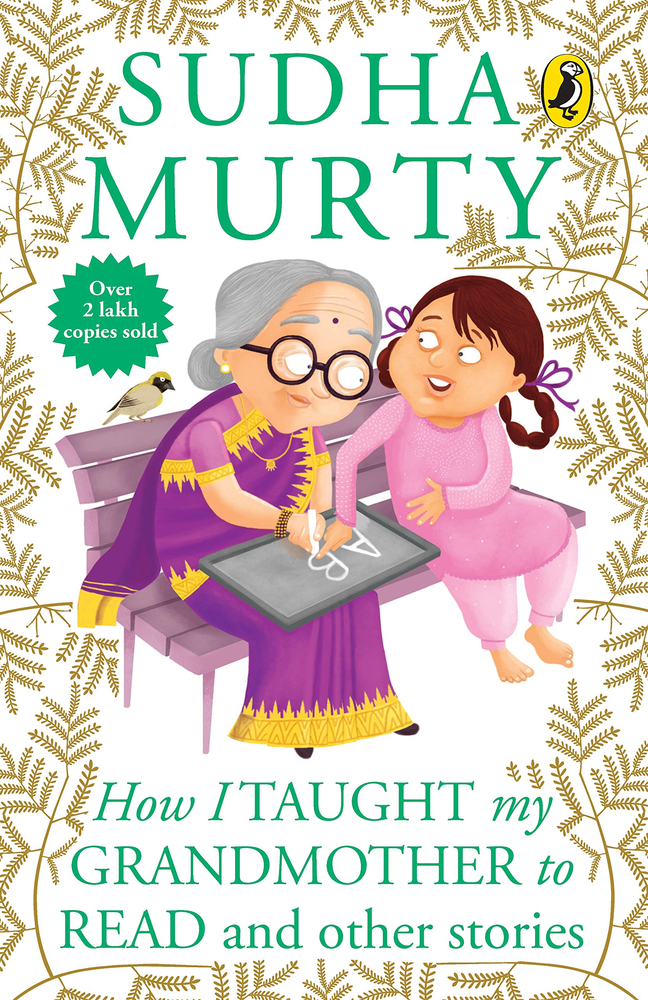
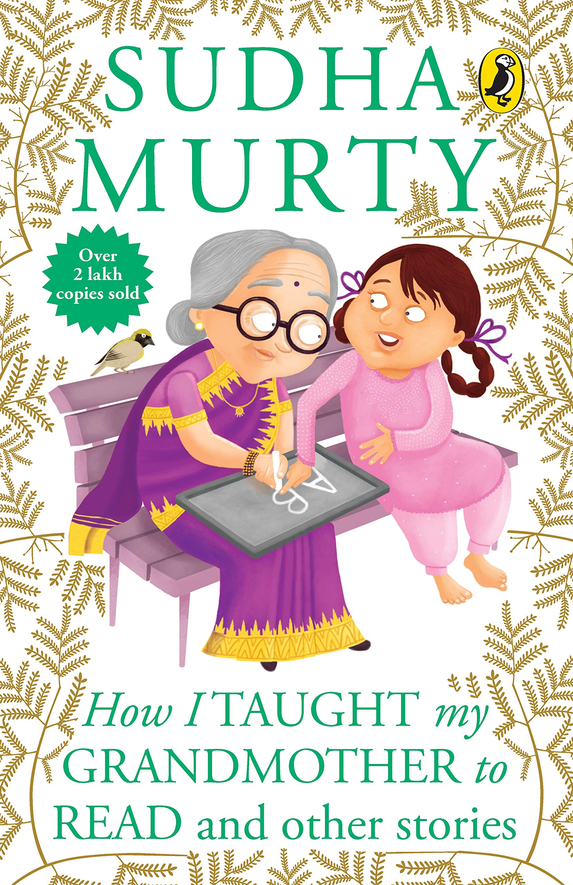

Sudha Murty
From being born at Shiggaon in North Karnataka, leading a simple life and finally becoming established in life- that is Sudha Murty, the chairperson of the Infosys Foundation. She is a prolific writer in English and Kannada, having written a number of novels, collection of short stories, non-ficional pieces and various other books for children. In most of her stories, she has tried to emphasize on certain invaluable teachings that she learnt in her own life. She has never exaggerated or written in a flowerly language. Instead, she has tried to share her own views, which inspires millions of young readers to realize their dreams. She was the recipient of the Best Teacher Award in 1995 from the Rotary Club of Karnataka, the R.K. Narayan Award for Literature and the Padma Shri in 2006. Besides, she is an eminent social worker, who has founded several orphanages, participated in rural development efforts and supported the movement to provide all Karnataka government schools with computer and library facilities. Some of her popular books include "How I Taught My Grandother to Read and Other Stories", "Grandma's Bag of Stories", "The Day I stopped Drinking Milk", "The Magic of the Lost Temple", "Wise and Otherwise" and many more.
 
